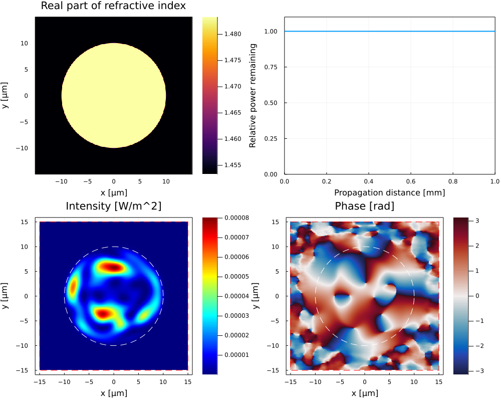

Simple multimode fiber
This example reproduces figure 1 of the BPM-Matlab [Veettikazhy2021] paper.
Description
A Gaussian beam with $w_0=2.5\,\mu m$ is launched with an offset of $5\,\mu$m in the y-direction into the fiber core of a 1 mm long multimode fiber. The beam is titled by 5° towards the positive x-direction by providing a corresponding tilt phase screen for the input electric field. The wavelength is $800\,nm$. The fiber core has a radius of $10\,\mu m$, a core refractive index of $1.4833$ and a cladding refractive index of $1.4533$. The number of grid points is chosen to result in a resolution of $\Delta x = \Delta y = 0.067\, \mu m$ and $\Delta z=0.4\,\mu m$.
The code
Run the following code to get figure 1 of the paper. First, the module is loaded. The function calc_initial_field is used to calculate the initial gaussian beam. The parameter X and Y are a grid of points where to calculate the field. Eparameters can be used to pass additional parameters to this function.
To prepare for the propagation, a Dict is setup containing all relevant parameters. Finally, the function fdbpm! is called with the dictionary as a parameter. This starts the iteration with the given parameters and a plot is generated and updated step by step. The final electric field as well as other parameters a stored within the dictionary and can be used for additional propagation steps or other purposes.
using BeamPropagationMethod
function calc_initial_field(X, Y, Eparameters)
w_0 = 2.5e-6
offset = 5e-6
amplitude = @. exp(-((X)^2+(Y-offset)^2)/w_0^2)
phase = @. -sind(5)*X/800e-9*2*π
E = @. amplitude*exp(im*phase)
return E
end
p = Dict(
:useGPU => false,
:updates => 50,
:Lx_main => 30e-6,
:Ly_main => 30e-6,
:Nx_main => 400,
:Ny_main => 400,
:padfactor => 1.0,
:dz_target => 0.4e-6,
:alpha => 3e14,
:lambda => 800e-9,
:n_background => 1.4533,
:n_0 => 1.4533,
:Lz => 1e-3,
:shapes => [0 0 10e-6 2 1.4833],
:E => calc_initial_field,
:Intensity_colormap => :jet
)
fdbpm!(p);Expected output
After the full propagation you should see the following plot:

- Veettikazhy2021Madhu Veettikazhy, Anders Kragh Hansen, Dominik Marti, Stefan Mark Jensen, Anja Lykke Borre, Esben Ravn Andresen, Kishan Dholakia, and Peter Eskil Andersen, "BPM-Matlab: an open-source optical propagation simulation tool in MATLAB," Opt. Express 29, 11819-11832 (2021). Link to article